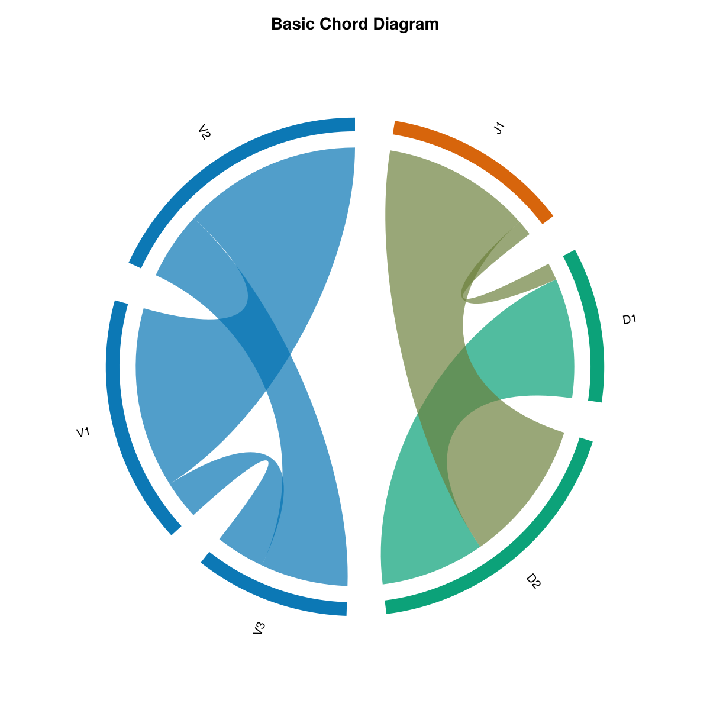
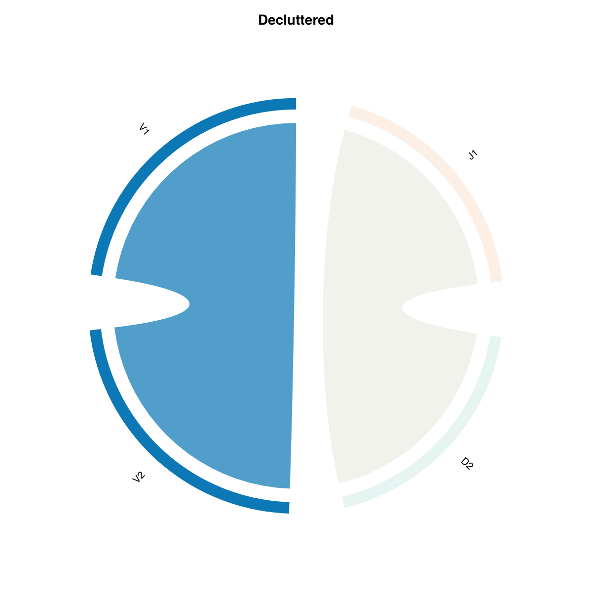
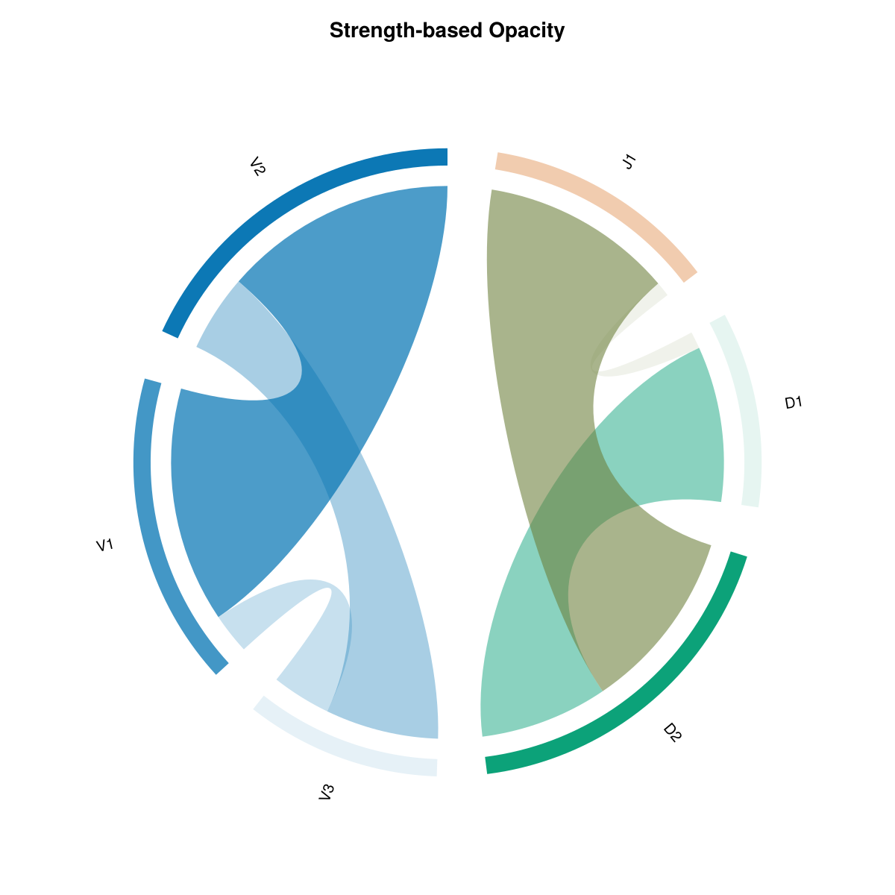
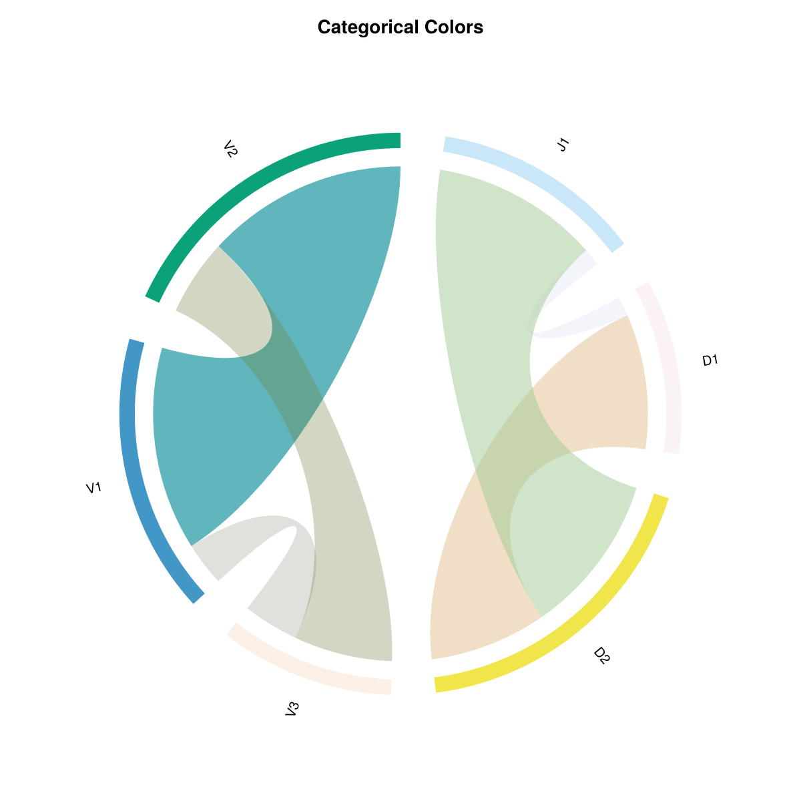
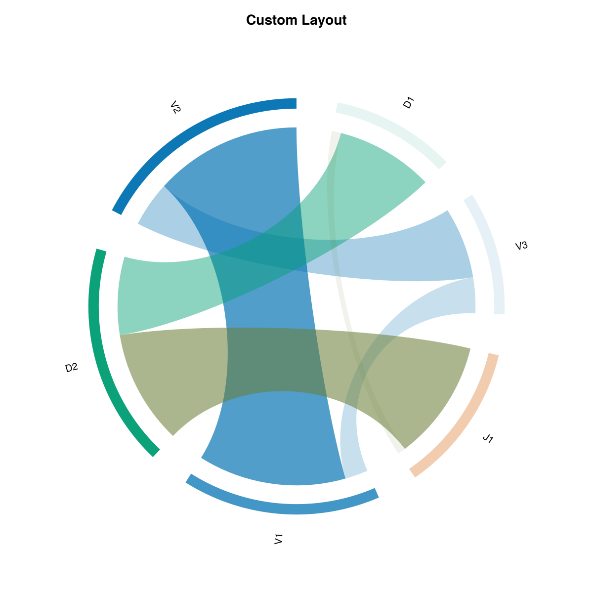
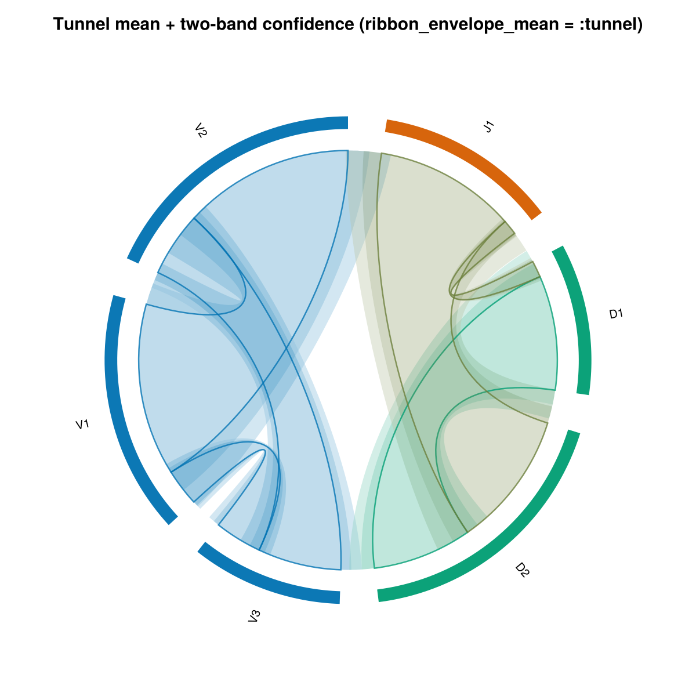
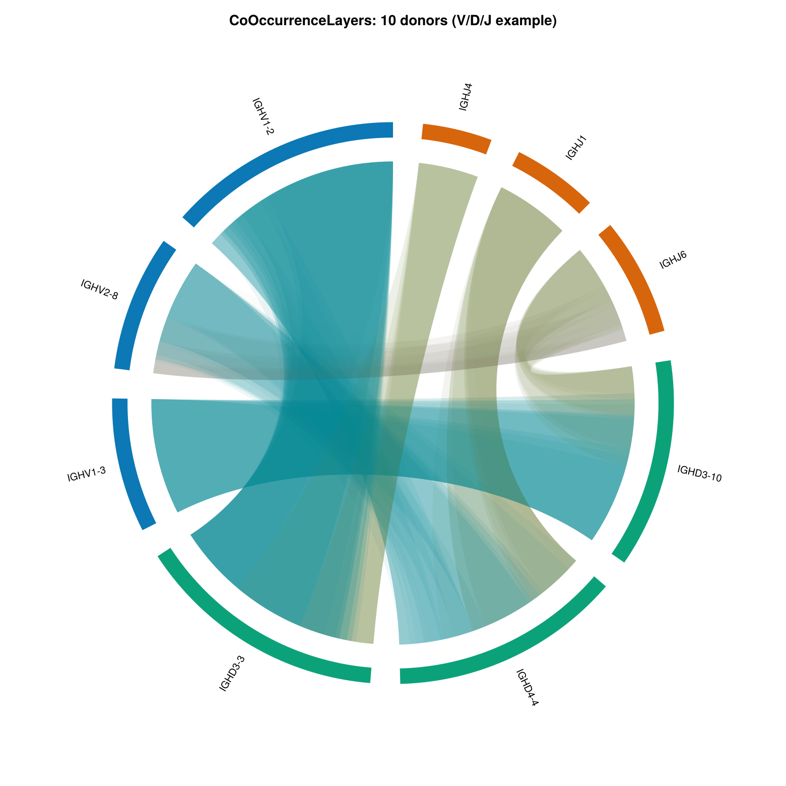

Gallery
Figures are generated by docs/generate_examples.jl when you build the docs (docs/make.jl runs it). Shared style: theme_light() + chord_theme, with semi-transparent ribbons via ComponentAlpha (same idea as chordplot defaults).
Basic chord diagram

Toy V/D/J matrix, colorscheme = :group. Basic Example
Filtered

Higher min_arc_flow / min_ribbon_value. Filtering
Strength-based opacity

ValueScaling on ribbons and arcs. Customization
Categorical colors

colorscheme = :categorical. Color Schemes
Layout by value

sort_by = :value and tighter geometry (see generate_examples.jl). Layout
Ribbon envelope

Mean ± band matrices. Ribbon envelope
Stacked per-donor layers
